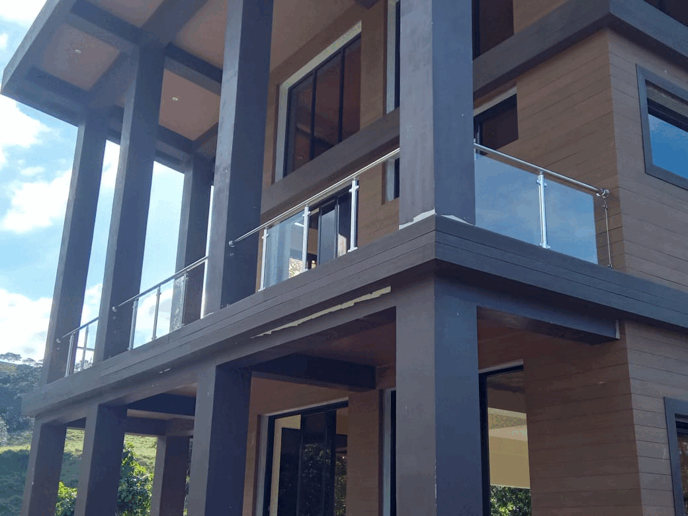
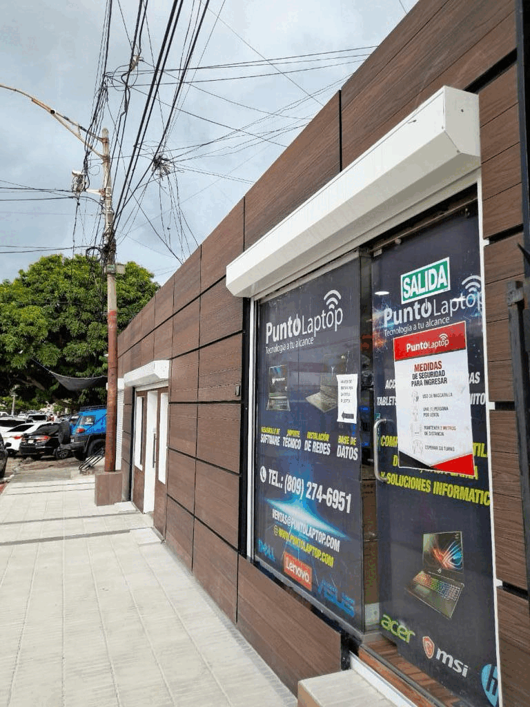
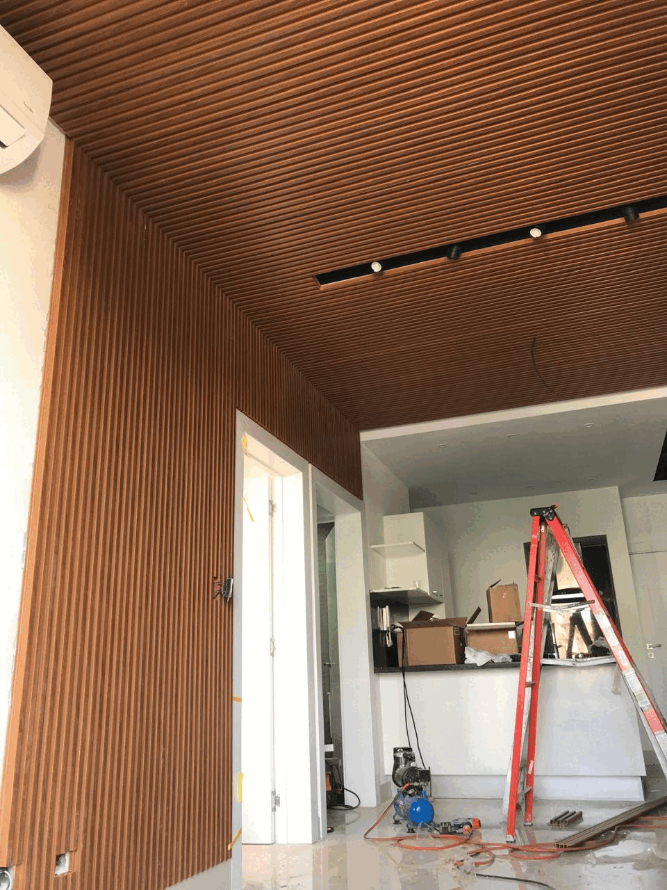
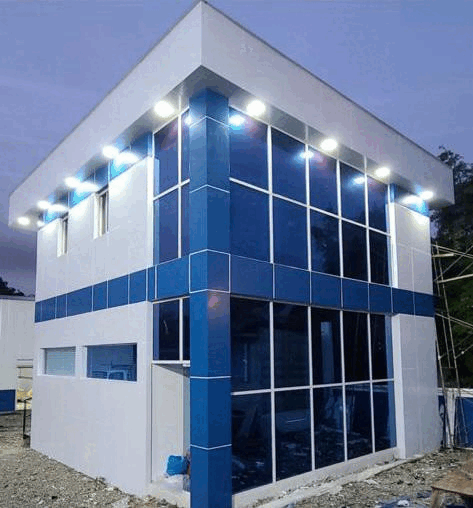

RW SoluCristal
"Creaciones únicas que transforman tu espacio"

Últimos trabajos
En este proyecto, combinamos acero inoxidable y madera sintética para lograr un diseño contemporáneo y resistente en el interior de la casa. El acero inoxidable ofrece un acabado moderno y robusto, mientras que la madera sintética aporta una textura natural y ecológica. Esta fusión de materiales crea espacios sofisticados, duraderos y fáciles de mantener, ideales para un estilo de vida actual.
En este diseño, incorporamos madera sintética tipo deck para el interior del local, logrando una atmósfera moderna y acogedora. Este material combina la estética de la madera natural con la resistencia y durabilidad propias de la tecnología actual. Su fácil mantenimiento y capacidad para soportar el desgaste lo hacen perfecto para crear un entorno funcional y elegante, ideal para negocios que buscan calidad y estilo.
En este ejemplar, utilizamos madera sintética, ofreciendo una solución elegante y sostenible. Su resistencia, bajo mantenimiento y aspecto cálido aportan una atmósfera moderna y sofisticada, ideal para crear espacios funcionales y de alto rendimiento.
En este espacio, se optó por el uso de ACM Alucobond para el recubrimiento del local, una elección que combina resistencia y estilo. Este material, conocido por su ligereza y gran durabilidad, ofrece un acabado moderno y pulido. Ideal para aplicar tanto en interiores como exteriores, el ACM Alucobond garantiza un entorno elegante y de bajo mantenimiento, siendo perfecto para negocios que desean proyectar una imagen vanguardista y práctica.